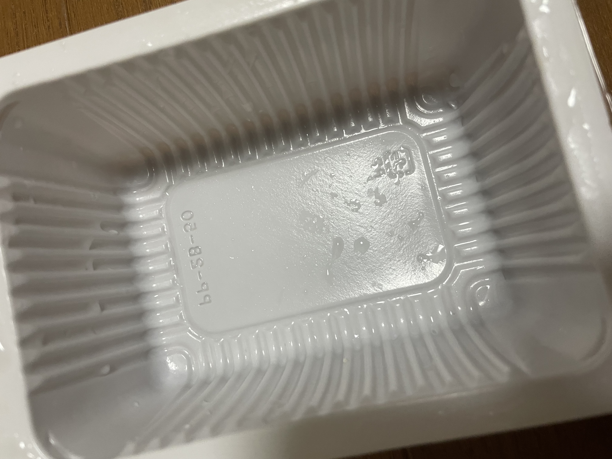
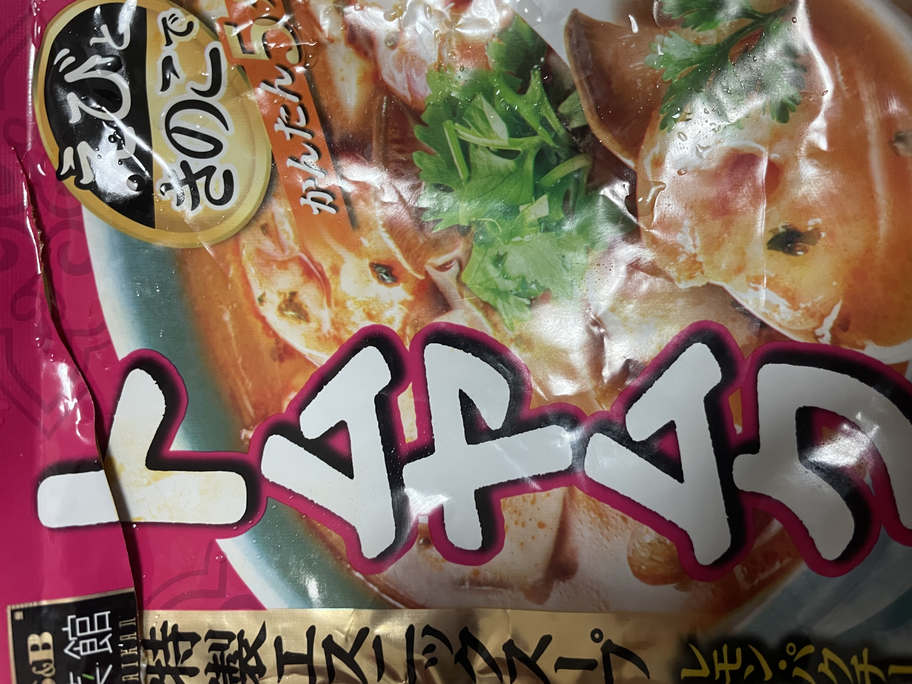

26/4/21（投稿日）TERUO＠teruo 普通に美味かった。作ったトムヤムクン鍋が不味すぎて、水で豆腐を洗って、あじぽんをつけて食べたらなかなか美味かった笑 ■豆腐あじぽん ■材料：豆腐・あじぽん（ミツカン） ■作り方：沸騰させた豆腐を、あじぽんつけて食べるだけ。 ⇒★★★⋆ 3.5 ■スギ薬局（文京台店） ■名古屋市 ■60円位（豆腐） ■Ate day：26/4/21 （自分が撮った写真）
26/4/21（投稿日）TERUO＠teruo めちゃくちゃまずいな！！美味しくねぇ。マジで美味しくない。 ■トムヤムクン鍋 ■材料：ねぎ・豆腐・トムヤムクンの素（S＆B） ■作り方：素を鍋に入れて、沸騰させて、切ったネギと豆腐を入れて煮込む。 ⇒★★ 2.0 ■スギ薬局（文京台店） ■名古屋市 ■250円位（素） ■Ate day：26/4/21 （自分が撮った写真）